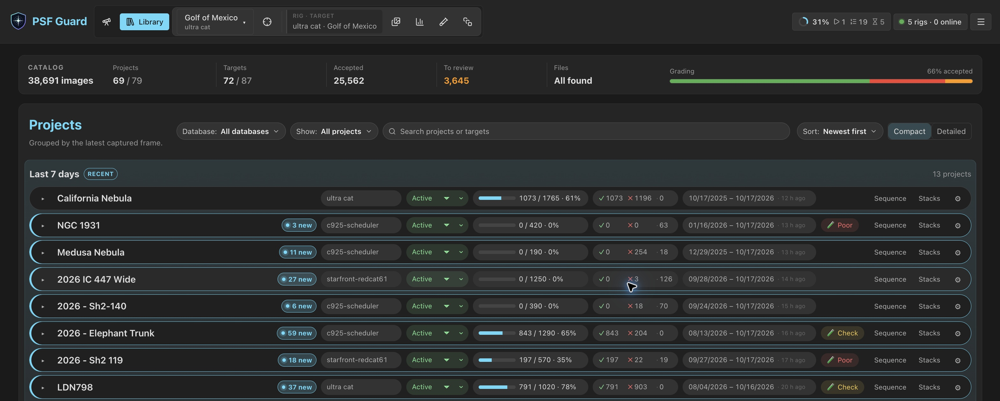

Getting Started
Use PSF Guard on your desktop, or run it on a server or NAS and open it in a browser. Both give you the same tools to review images, plan captures and build calibrated stacks.

Choose desktop or server
Choose where PSF Guard will run and read your image files.
Install the app on Windows, macOS or Linux and import your image folders.
Run PSF Guard beside your image storage and review it from a browser. You can also connect N.I.N.A. to send captures and retrieve plans and grades.
PSF Guard catalogs files in place. You can import images from any capture software; N.I.N.A. and Target Scheduler are optional.
Set up the desktop app
- Install the app for your operating system.
- Open PSF Guard and import your image folders.
- Choose a project in the Library and review its frames.
Import your images
Open Settings → Databases → New Database from Images, add your image folders, and choose Create & Import. PSF Guard groups frames into projects, targets and exposure plans from their headers. Turn on Automatic import to check for new frames on a schedule. For frames with unknown targets, choose Review and approve their import. See Import Images.
Set up a server or NAS
- Install with Docker on your server or NAS, or run the standalone server.
- Give PSF Guard access to your image folders and a persistent location for its catalogs and settings. Follow the storage setup for Docker.
- Open the server URL in a browser and import your images. Use paths on the server, where PSF Guard reads the files.
- Set up server accounts for access from other computers. See Configuration & API for server settings.
You can import files already on the server, or connect N.I.N.A. to transfer captures as you take them.
Optional: connect N.I.N.A.
For N.I.N.A. with Target Scheduler, use the PSF Guard Sync plugin. Target Scheduler runs your imaging sessions. The Sync plugin sends capture records to PSF Guard and retrieves saved plans and reviewed grades. You can also upload saved lights and calibration frames.
- Install PSF Guard Sync from the PSF Guard plugin repository in N.I.N.A.
- In PSF Guard, choose the destination catalog under Settings → Databases. If you need a new catalog, create one from an empty image folder; the plugin can populate it.
- Edit the catalog and generate a pairing code. Enter the server URL and code in the N.I.N.A. plugin, then click Pair and Test connection.
- Choose which data to sync. If you also want to transfer image files, enable uploads and choose a receive folder in PSF Guard.
Follow Pair N.I.N.A. with a catalog for the full setup. The Sync plugin transfers data; Target Scheduler remains responsible for capture. You do not need the Director beta for this setup.
Review a project
- In the Library, pick a project. Its row shows the database, state, accepted against desired, grading counts and capture dates.
- In Images, filter by status, filter or quality flag. Move with the arrow keys, select with Space, accept with A and reject with X.
- Open Sequence to see a whole session scored, with the cause behind each low score.
- Open Calibration to review the bias, dark and flat frames matched to your lights. If the Library shows a Poor or Check badge, click it to see the calibration findings.
- Open Stacks to stack the accepted frames per channel and combine them in color.
- Export the accepted lights for PixInsight, or run WBPP on the server.
Next: Library & Grader, Quality Screening, Calibration, Stacks and Export.
Plan across rigs
PSF Guard creates rigs and plans from your registered databases and Target Scheduler projects. Open a plan's Planning workspace to frame it on the sky, set goals per filter, and write it into each rig's Target Scheduler database. See Planning.
Other database workflows
Most setups can start by importing images or connecting N.I.N.A. to a server. If you need to work with existing Target Scheduler databases, these options remain available on desktop and server.
Open an existing Target Scheduler database
- Open Settings → Databases → Add Database.
- Pick the SQLite file and add the folders that hold its images. On Windows
the file is usually
%LOCALAPPDATA%\NINA\SchedulerPlugin\schedulerdb.sqlite. - Choose a project in the Library; it opens in Images.
Image folders can be read only. The database file must be writable to save grades and plans.
Transfer between separate databases
If you keep separate telescope and grading databases, use Data Transfer to preview and copy captures, plans and grades. For transfers between PSF Guard servers, use Remote PSF Guard. These are manual alternatives to the N.I.N.A. Sync plugin.
Early beta: Director and collaboration
The upcoming N.I.N.A. Director plugin is a separate integration for plan execution and live rig status. Its early beta can retrieve an activated program, report status and check in saved captures. Direct acquisition is still upcoming, and pairing alone does not start a sequence or grant equipment control. Use Target Scheduler with PSF Guard Sync for imaging today.
Collaboration is also in early beta. It connects rigs to shared imaging projects on services such as Starfront, imports assigned work and submits accepted contributions.
Image formats
PSF Guard reads FITS (.fits, .fit, .fts)
and monolithic XISF. FITS images in an extension, tile-compressed (fpack), signed
16-bit and 64-bit integer images all open. Raw one-shot-color frames with a
BAYERPAT header show in color (C switches); grading measures their luminance.